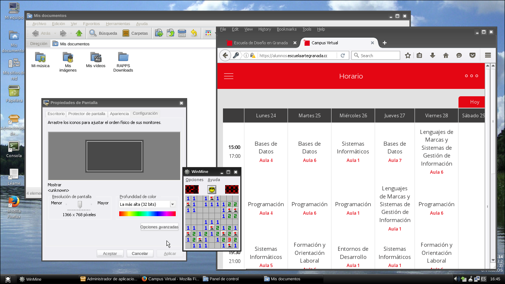

Introducción
ReactOS es un sistema operativo de código abierto cuyo código se rige por la licencia GPL[1]. Se basa en Windows Server 2003 y en su kernel de Windows NT 5.2[2], lo que le permite ejecutar aplicaciones creadas para Windows (desde Windows 95 a Windows 8[3]) aunque se encuentra en un estado de desarrollo constante.
A día de hoy, la versión "estable" de ReactOS es 0.4.14 en 32 bits, aunque se esté trabajando en la siguiente (0.4.15). Las versiones de 64 bits aún son experimentales y no se publican completamente compiladas.[4]
Características:
Compatibilidad general con programas de 32 bits de Windows XP y Windows Server 2003, aunque se ha logrado ejecutar aplicaciones no compatibles con estas versiones como Minecraft[6], RPCS3[7] o VirtualBox[8]. En su versión de lanzamiento de 32 bits, es compatible con programas del día a día como LibreOffice, Firefox, VLC, LibreCAD [9] o Dev-C++ [10], aunque por ahora, algunos solo con versiones más antiguas.
Posee compatibilidad con controladores de hardware para Windows Server 2003 y XP para poder funcionar en hardware antiguo. Además incluye su propio explorador de archivos, un buscador, una tienda de aplicaciones creada para este sistema operativo (con programas seleccionados por la comunidad que funcionan plenamente)[11] e incluso su propio registro. Compatibilidad muy básica con DirectX pero tiene soporte completo con OpenGL 1.4[12].
Su kernel es compatible con el lenguaje Batch, y puede ejecutar los ejecutables .bat como si fuera Windows. Posee CMD pero actualmente no hay planes para replicar PowerShell[13].
Por defecto, trae 5 temas de escritorio con estética clásica de principios de los 2000:
 Classic
Classic

Lautus
Lunar
Mizu
Modern
![[6]](https://cdn.discordapp.com/attachments/377108064827867136/829476674721808384/unknown.png){kind=link}
![[7]](https://cdn.discordapp.com/attachments/377108064827867136/673266289774428160/ReactOS_0.414_Running_-_Oracle_VM_VirtualBox_1.2.2020._21_32_24.png){kind=link}
![[8]](https://cdn.discordapp.com/attachments/377108064827867136/594611868379906059/Unnamed.png){kind=link}